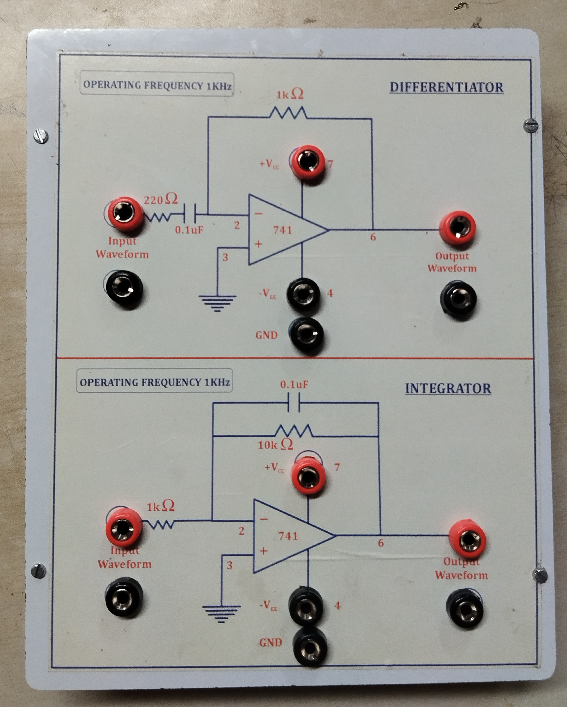
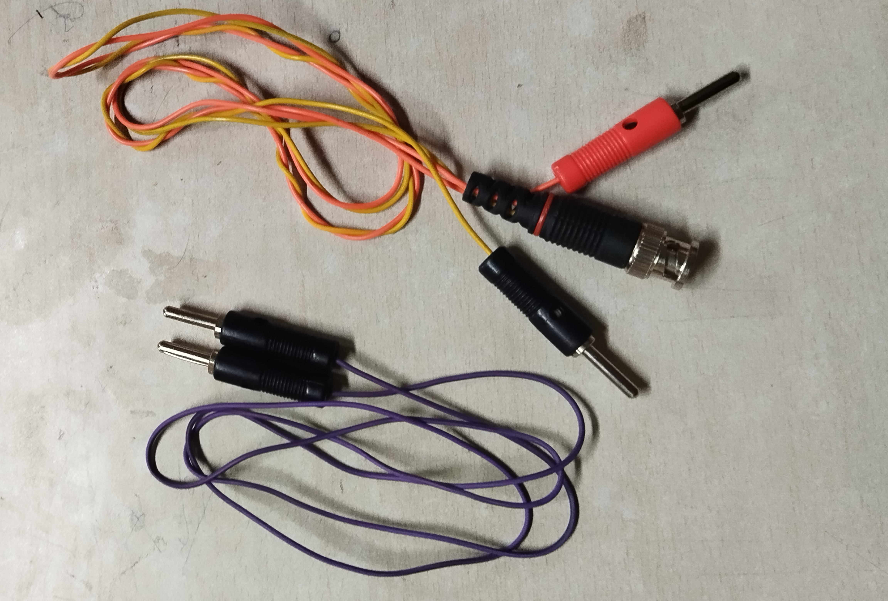

OPAMP 741 Integrator & Differentiator Testing Kit
A hands-on hardware project showcasing analog signal transformation using OPAMP circuits — fully self-soldered and enclosed for lab testing 🔩📉📈
📘 Project Overview
This academic electronics project demonstrates two core analog operations — integration and differentiation — using the classic IC OPAMP 741. The complete circuit is soldered onto a zero PCB board, securely enclosed in a custom-built wooden casing 🪵, and externally interfaced using banana and BNC connectors.
⚙️ From Zero PCB wiring to soldering, box mounting to making custom cables — everything was built manually by me. A perfect blend of theory + hardware practice 💡🔬.
🚀 Features & Highlights
- 🔄 Dual-function analog system: Integrator & Differentiator
- 🧰 Enclosed in a wooden box for portability and protection
- 🔌 Banana plug connectors for power supply input (+V, -V, GND)
- 🎛️ BNC connectors for signal input/output to/from function generator & CRO
- 🪛 Fully manual soldering & wiring on zero PCB board
- 🧵 Custom-built banana-to-banana and BNC-to-BNC cables using just pins
🧠 Tech Stack Used
- Hardware Components:
- 🧠 IC 741 (x2)
- 🧲 Resistors, capacitors
- 🔧 Zero PCB board
- 🪵 Wooden case
- 🔌 Banana jacks
- 🔗 BNC connectors
- 🪛 Wires, solder, pins
- Tools Used:
- 🔥 Soldering iron
- ✂️ Wire cutter & stripper
- 🧵 Multicore wires for making BNC-to-BNC and banana-to-banana cables.
🗂️ Working / Architecture
- 💡 The system consists of two analog OPAMP circuits:
- 📉 Integrator Circuit: Converts square wave to triangle wave
- 📈 Differentiator Circuit: Converts square wave to sharp spikes
- ⚡ Power Input through banana plugs: +12V, -12V, GND
- 🔁 Input Signal via BNC from function generator
- 📺 Output Signal observed on CRO via BNC
- ✅ Fully labeled and tested for safe & quick lab use
🔗 Links & Resources
🧠 What I Learned
- 📐 How to manually implement real analog functions
- 🧠 Deepened understanding of signal behavior through OPAMPs
- 🔌 Fabrication of reusable test kits for labs
- 🧵 Learned how to create custom cables and ensure safe external interfacing
- 🛠️ Built confidence in real-world electronics assembly and debugging
